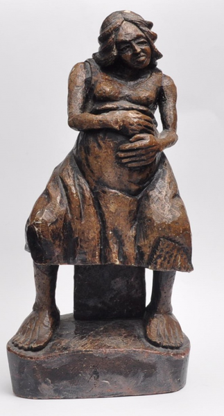
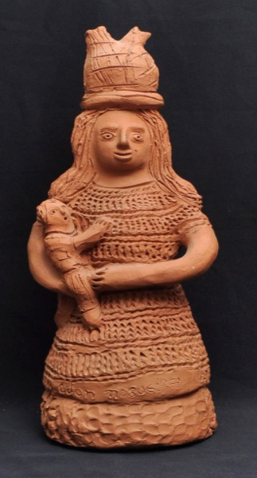
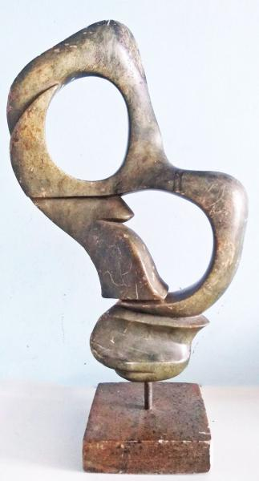

Loure's Art
As melhores Artes do nosso querido Artista Loure's.
Produtos Impares

$120,00
A Maternidade - 1965
Escultura de pedra sabão patinado representando gravidez.
$120,00

$150,00
Mulher de Barro - 1960
Escultura de pedra sabão representando a maternidade.
$150,00

Abstrato - 1976
Elaborada em pedra pelo consagrado artista plástico, cuja perfeição e beleza de seus trabalhos, lhe renderam reconhecimento e prêmios, nacionais e internacionais.
$85,00Sobre o Artista
Considerado um dos principais artistas plásticos brasileiros, suas obras são referência para jovens iniciantes e também para nomes consagrados, incluindo colecionadores e críticos. José Rodrigues Loures era acadêmico. Pintava e esculpia a figura humana, quase sempre na temática social e política. Atualmente suas obras são extremamente valorizadas, no brasil e principalmente no exterior.